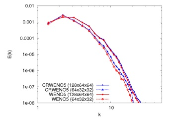

Direct Numerical Simulation of
Compressible, Turbulent Flows
The high spectral resolution of the CRWENO5 scheme, combined with the non-oscillatory behavior across discontinuities makes them suitable for the direct numerical simulation (DNS) of compressible, turbulent flows. Two canonical flow problems - isotropic turbulence decay and shock-turbulence interaction - are solved to demonstrate the performance of these schemes for such flows.

Decay of Isotropic Turbulence
Contact: ghosh (at) mcs (dot) anl (dot) gov

Shock - Turbulence Interaction
The decay of isotropic turbulence is characterized by a transfer of energy from smaller to higher wavenumbers. The flow is initialized with random velocity fluctuations satisfying a given energy spectrum. The problem is solved using the WENO5 and CRWENO5 schemes on three different grids - 32, 64 and 128 points in each dimension. The solutions are grid-converged for the 128-point grid. The CRWENO5 scheme shows lower dissipation on the other two grids, especially at higher wavenumbers.

The interaction of a turbulent field with a shock wave results in the amplification of turbulent fluctuations. A larger amplification if observed for smaller length scales. Solutions obtained by the CRWENO5 and WENO5 schemes are compared for two different grid sizes. It is observed that the CRWENO5 schemes predicts stronger fluctuations due to lower dissipation. A comparison of the energy spectrum shows that the CRWENO5 schemes shows a significantly improved resolution of smaller length scales.
Pre-shock
Post-shock